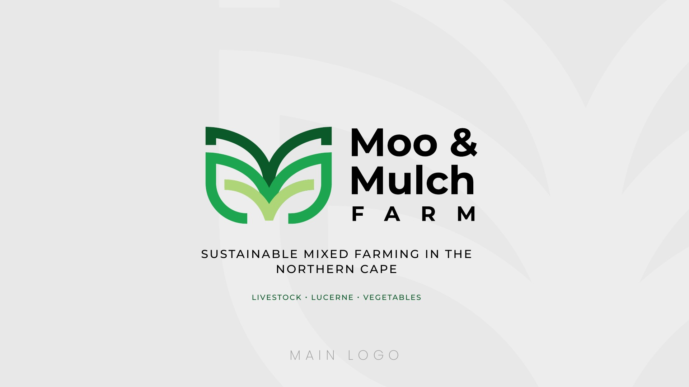
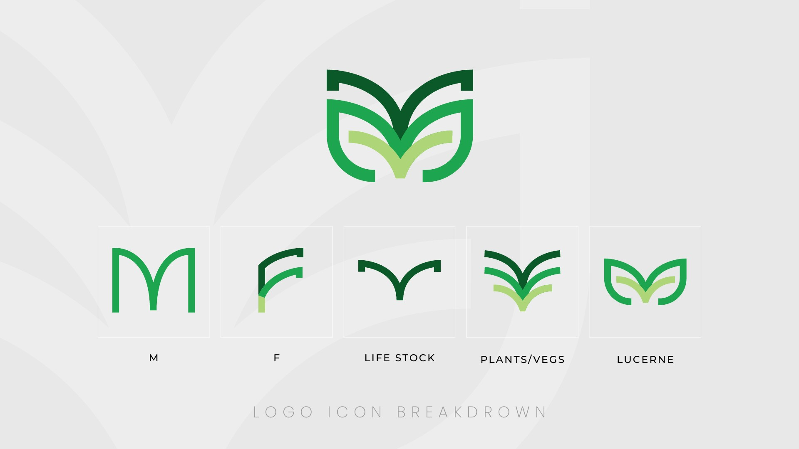
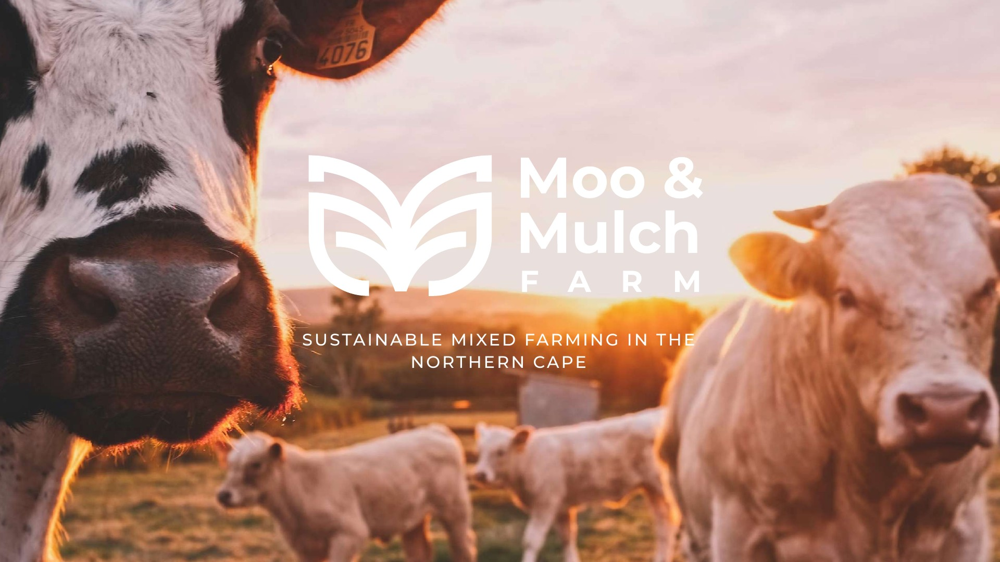
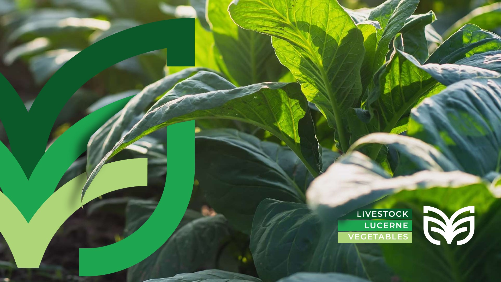
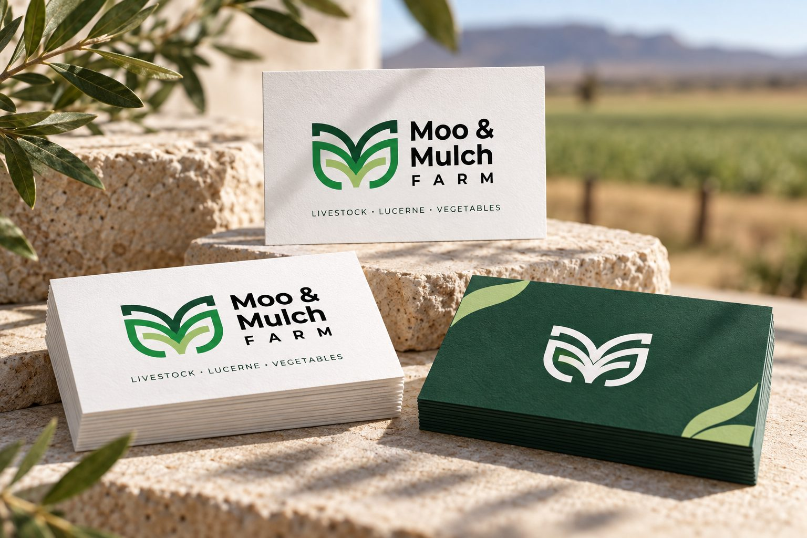
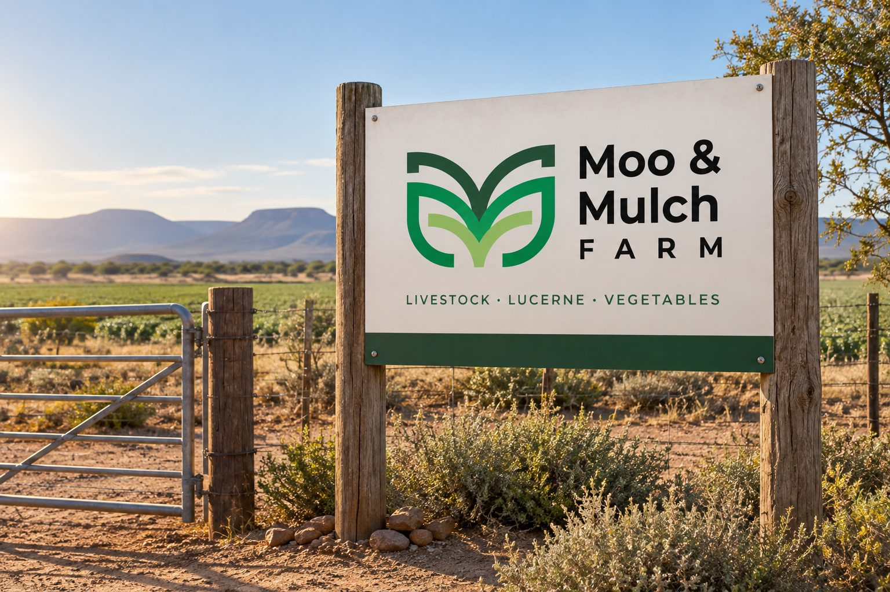
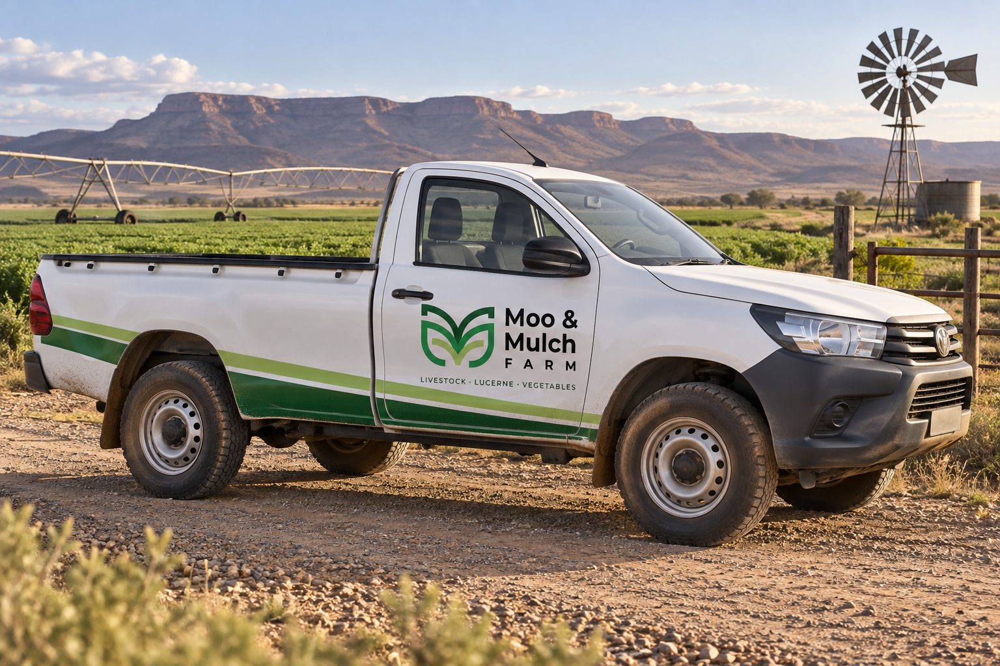
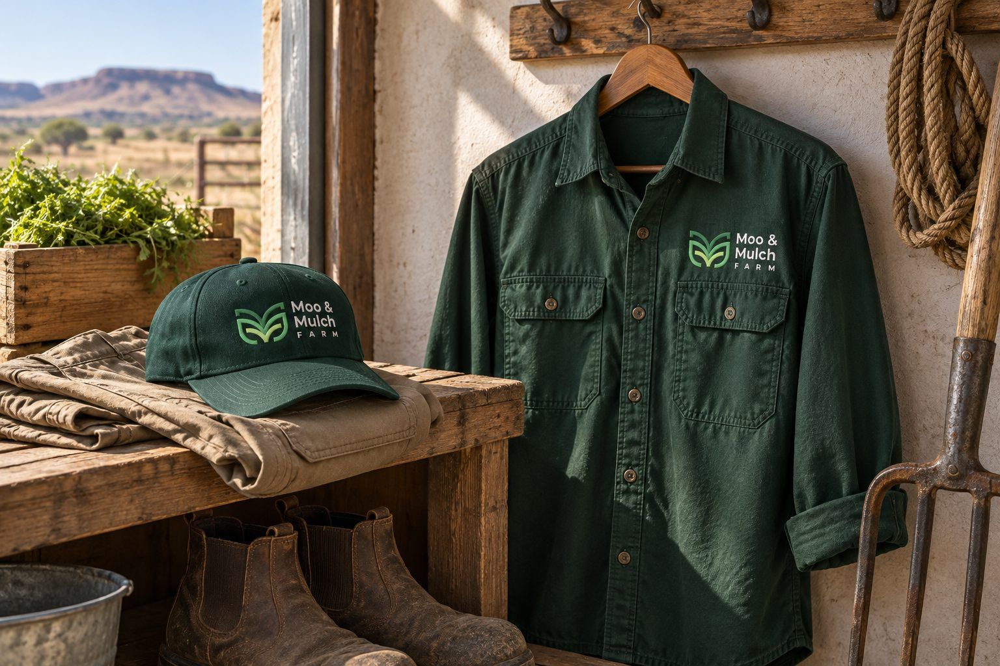
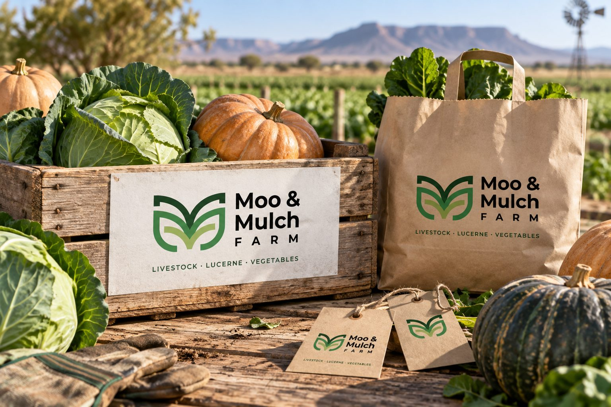
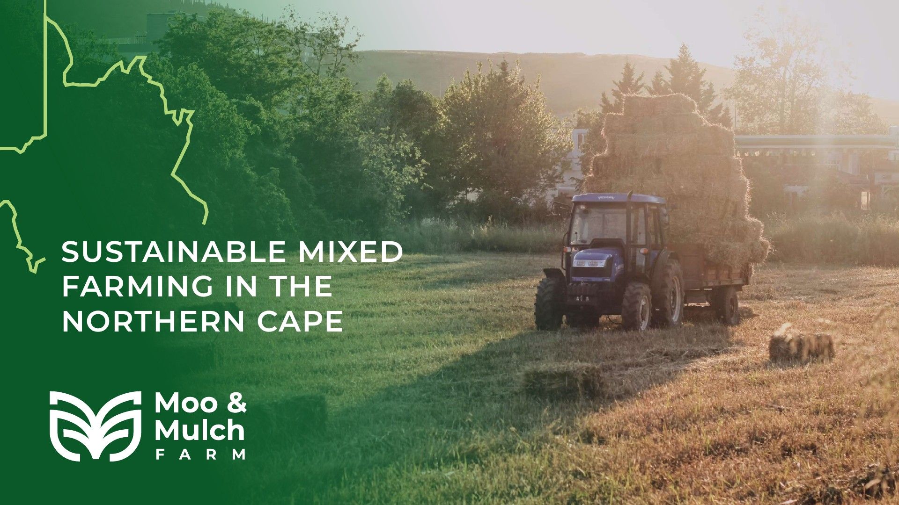

Moo & Mulch Farm
Rooted in the land.
Ready for the everyday.
An agricultural identity that brings livestock, lucerne and vegetables together, with a practical family of brand applications.

Many products.
One farm identity.
Moo & Mulch Farm’s brief centres on sustainable mixed farming in the Northern Cape, supplying livestock and crops across the Northern Cape and North West. Reliability, affordability and consistency are the qualities the presentation asks the identity to communicate.
The product range in the brief spans cattle, goats and sheep, lucerne, seasonal cabbage, summer watermelon and pumpkins. The design challenge is to give that varied offering one recognisable name and mark.

Letters, leaves
and the land.
The supplied symbol breakdown links the letters M and F with livestock, plants and lucerne. Layered curves gather those references into a compact, symmetrical emblem.
The mark can sit beside the full farm name or work on its own at smaller scales. Its open shapes also offer a starting point for larger graphic crops and quiet background details.

Green with purpose.
Clear at a glance.
The original presentation pairs three shades of green with black lettering and generous light space. The darker tone gives the system weight, while the brighter greens suggest fresh growth.
Bold, uncomplicated type keeps the farm name easy to read. For the new applications, white paper, kraft stock, cotton and timber give that visual language a practical setting; these materials are a proposed extension of the identity.


A considered
first impression.
A coordinated stationery set extends the identity to everyday correspondence and introductions. The concept pairs a restrained letterhead and envelope with a forest-green folder, notebook and matching cards.
Small logo placements leave useful writing space. Green accents and consistent alignment connect the pieces without overwhelming the information they would carry.
Small format.
Strong recognition.
The card concept uses a light front for the full-colour identity and a dark green reverse for a simple, high-contrast mark. It explores how the brand can remain recognisable in a compact format.
The balance of open space and bold colour carries the same visual character as the larger stationery pieces.

Easy to spot.
Easy to remember.
The entrance-sign concept gives the name and emblem priority, with the three product categories as a secondary line. A light sign face and green base connect the signage to the printed materials.
The vehicle treatment takes the same approach: a clear door graphic and a restrained green accent make the identity visible in a working farm setting. These scenes explore placement and scale.


Made for
the daily routine.
The workwear concept translates the emblem into a simple light-coloured embroidery treatment on green fabric. The shirt and cap share a consistent mark placement and a practical palette.
Produce crates, kraft bags and paper tags explore another use of the identity: carrying the farm name with the products. The layouts focus on recognition and leave room for product-specific information when developed for production.


One visual language.
Room to grow.
Together, the supplied identity and the new application concepts show how a single agricultural mark can connect correspondence, people, premises and products. Each surface asks something different of the design, while colour and the emblem keep the family recognisable.
The original farm artwork brings the story back to its source: livestock, lucerne and vegetables. The expanded concepts explore how that story could continue beyond the presentation.

For farms & agricultural producers
Can you design a brand for a farm or agricultural business?
Yes. For Moo & Mulch Farm, a mixed farm in the Northern Cape, we gave a varied range — livestock, lucerne and vegetables — one recognisable name and mark.
Can you design packaging, signage and vehicle branding for my farm?
Yes. We design produce packaging, crates and tags, entrance signs, vehicle graphics and workwear, and show them as concept mockups before production.
We sell many different products. Can one brand cover them all?
Yes. A single mark and colour system can connect everything you produce — Moo & Mulch’s emblem links its initials with livestock, plants and lucerne.
Do you work with farms outside Gauteng?
Yes. We are based in Johannesburg and work remotely with businesses across South Africa, including the Northern Cape.